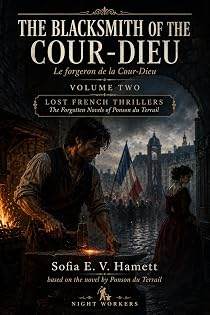

Le Forgeron de la Cour-Dieu
by Pierre-Alexis Ponson du Terrail · translated by Sofia E. V. Hamettpar Pierre-Alexis Ponson du Terrail · traduit par Sofia E. V. Hamett
The bookLe livre
While all this was going on in Paris, life at la Billardière went on as usual: the Chevalier des Mazures got better, got back on a horse, and started riding out towards Beaurepaire every day. There were few newspapers then — only the nobility and a handful of big merchants took the Mercure. News travelled by horse, which is why it arrives too late. The conclusion of the diptych.
Pendant que tout cela se passait à Paris, la vie continuait comme d'habitude à la Billardière : le chevalier des Mazures se remit peu à peu, remonta un jour à cheval, et prit dès lors le chemin de Beaurepaire tous les jours. On avait alors peu de journaux — seules la noblesse et quelques gros marchands recevaient le Mercure. Les nouvelles voyageaient à cheval, ce qui explique qu'elles arrivent trop tard. Conclusion du diptyque.
From the opening pagesLes premières pages
Halves, Countess
While all this was happening in Paris, life at la Billardière had gone on as usual. The Chevalier des Mazures recovered little by little, and one day he got back on a horse. It was the same day the Countess des Mazures and Toinon came home from Paris. From then on he was forever riding out towards Beaurepaire.
There were few newspapers then. Only the nobility and a handful of others — big merchants, mostly — took the Mercure de France, and the chevalier was one of the privileged few who did. The Rue de l’Abbaye affair was reported at length. It came to him like a flash of lightning: the countess had been in Paris, and the countess had the box. Next day his ride took him, as if by chance, towards Beaurepaire, and there he met the gardener — who happened to be Toinon’s devoted creature. From the man he learned that Toinon and her mistress were back, and a good deal besides. So he gave him a message to carry: Toinon was to meet him.
“Halves, countess,” he said to himself when he was alone.
What passed between the Chevalier des Mazures and Toinon, nothing will ever tell us. What is certain is that four days later, at around two in the morning, Toinon was up in the little gig that had already carried her once to the Cour-Dieu, driving flat out along the Pithiviers road with Jeanne’s fortune beside her. The Chevalier des Mazures had murdered his own sister-in-law for Toinon’s sole profit.
What became of the two of them, and of the others in this story? That is what we shall tell you — and to tell it we must carry you into the middle of that sinister time men call the Terror.
The Holly Branch
Evening was coming on. A January evening, dismal, foggy and cold.
All the same, a man and two women were walking the road from Étampes to Paris. They had left Montlhéry well behind them and were nearly at the edge of Antony. The man was very young, hardly more than a boy; the women were young too, girls, really. All three went along at a good pace in stout wooden clogs, dressed like peasants, their faces blue with cold. But they had come a long way, and by the dust on their clothes they had been walking for days.
Several times that day the young man had glanced at his two companions with a look of respectful tenderness and pity. Several times, when a village showed in the distance or a white house came up along the road, he had said, “We’ll stop here.” Then they would reach the village, or stand at the door of the house, and he would see hard faces and suspicious eyes and add, “Let’s go on a bit further.” And on the three of them went, he sighing, the two of them full of courage.
These were hard times. Brother did not trust brother; friends no longer believed in friendship; a father was wary of his own son. The storm that had been growling in the distance at the beginning of this story had broken now, the sky was full of lightning, and the tempest of ’93 was at its full fury. Nobility, clergy, the great merchant houses had all been swept off in the turmoil like autumn leaves rolled along on the wing of the wind. They had burned the châteaux and guillotined the men who owned them, guillotined the priests too, and shut up the churches. Of the pious monastery of the Cour-Dieu nothing was left but ruins, and ruins were all that remained of the château of Beaurepaire and of the hunting lodge where the lovely Aurore had once held court.
Of these three travellers braving the cold and the length of the road and the hunger of the journey, one — you have guessed it, perhaps — was that boy full of courage they called Benoît the hunchback. The two women following him were Aurore and Jeanne.
First, the Chevalier des Mazures had disappeared, on the very night Toinon fled with the box that held the whole of Gretchen’s daughter’s fortune. What had become of him? Nobody knew, not even his daughter Aurore.
How the Countess des Mazures ended, on the other hand, everybody knew. The morning after Toinon’s flight they found the countess in her bed, run through with five dagger thrusts and lying in a pool of blood. She had died without a cry — or at least without being heard. The dagger that had done the work was found, and the dagger belonged to the countess; and since Toinon, not content with the box, had helped herself freely to the diamonds and every coin she could lay hands on, nobody doubted for a moment that she had murdered her mistress. But it occurred to nobody at all to give her the chevalier for an accomplice.
The next year the storm broke, and constitutional monarchy took the place of absolute monarchy. Aurore and Jeanne went on living quietly in their little manor house under the protection of old Dom Jérôme. When the people came to the Cour-Dieu and threw open the monastery gates, the good monks went away weeping, each taking shelter where he could, with a relative or with a friend. Dom Jérôme had taken shelter with Aurore.
One other man too had abandoned his household gods and the house he was born in. But it was not fear of the Revolution that drove him. A child of the people — what had he to dread from the anger of the people? Perhaps he was obeying some terrible weight of grief. Perhaps he had set himself some mysterious task. That one was Dagobert the blacksmith. At the first blast of the bugle, when the country was declared to be in danger, Dagobert went off to enlist under the colours of the Republic, saying, “I’ll die, or I’ll be a general one day.”
In the end the storm blew so hard that there was no safety left even for the old priest who lived beside the two girls and was now their only protector. One night the municipal officers came for Dom Jérôme. Before going with them the old man gave the two girls his blessing; then, noticing Benoît the hunchback weeping beside them, he said to him, “You are a poor, weak, unlettered creature, but you have a brave and loyal heart. Defend them. Die for them, if it comes to that.”
And that is why, the day after they took the old priest away, Benoît and the two girls left.
So they had just come up to the edge of Antony when Benoît stopped.
“This,” he said, “is a place I don’t much like the look of.”
“Jeanne’s very tired, though,” said Aurore.
“Oh, I can walk further,” said Jeanne.
“What if we went round it?” said Benoît.
“And then?” said Aurore. “We’ll have to stop somewhere sooner or later.”
“I do believe,” Benoît murmured, “that’s the thing for us, mesdemoiselles.”
He put out his hand and pointed to a small white cottage at the side of the road. Above the door the wind was shaking the traditional branch of holly. A pleasant-faced old woman sat on the step, seeming to care very little about the cold.
The excerpt ends here — about 1,234 words of the published edition.L'extrait s'arrête ici — environ 1,234 mots de l’édition parue.
KindlePaperbackBrochéContextContexte
Rocambole made Ponson du Terrail famous and then swallowed the rest of his work. He wrote dozens of other novels — the Second Empire demi-monde, forest melodramas, police memoirs, Regency intrigue, Orientalist serials — and almost none of them survived in English. Lost French Thrillers recovers them, in the order they can be edited, with the same care given to the Rocambole cycle.
Rocambole a rendu Ponson du Terrail célèbre, puis a englouti le reste de son œuvre. Il a écrit des dizaines d'autres romans — le demi-monde du Second Empire, des mélodrames forestiers, des mémoires de police, des intrigues de la Régence, des feuilletons orientalistes — et presque aucun n'a survécu en anglais. Lost French Thrillers les exhume, dans l'ordre où ils peuvent être établis, avec le soin donné au cycle de Rocambole.
The whole programmeTout le programme